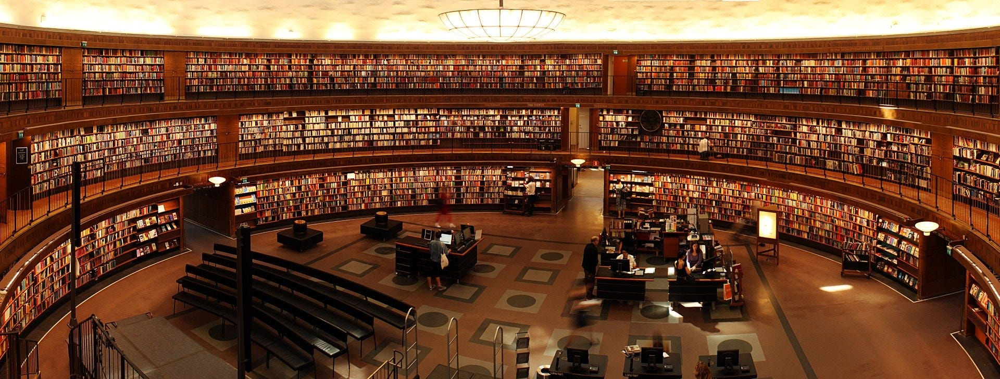

HAKKIMIZDA
Çalışma, öğrenme ve keşfetmenin merkezi olan CG Workspace, 7 Kasım 2021 tarihinden bu yana zengin
kaynakları ve etkileyici ortamıyla bilgiye açılan bir kapı niteliği taşıyor. İsminden de
anlaşılabileceği gibi, bu alan sadece bir kütüphane değil; aynı zamanda öğrenmeye yönelik bir
yaşam
alanı.
CG Workspace, sadece kitapların bulunduğu bir mekan değil. Burası, zengin bir kaynak yelpazesi
sunan,
modern teknolojiyle donatılmış, dinamik ve katılımcı bir merkez. Teknoloji, sanat, bilim ve iş
dünyasından kaynakları bir araya getirerek, herkesin ilgi alanlarına hitap etmeyi amaçlıyor.
Bu mekanda, rahat çalışma alanları, geniş kütüphane koleksiyonu, interaktif eğitim materyalleri
ve
etkinliklerle dolu programlar bulabilirsiniz. Öğrenmeyi desteklemek adına düzenlenen atölyeler,
seminerler ve etkinlikler, katılımcıların bilgiyi pratiğe dökmelerine ve birbirlerinden
öğrenmelerine
olanak sağlıyor.
CG Workspace, sadece bilgiye erişimi kolaylaştırmakla kalmıyor, aynı zamanda bir topluluk
oluşturmayı da
hedefliyor. Burada bulunanlar, bilgi paylaşımı, deneyimlerini aktarma ve ortak ilgi alanları
doğrultusunda etkileşimde bulunma şansı buluyorlar.
Eğer siz de bilginin sonsuz dünyasında keşif yapmak, öğrenmek ve paylaşmak istiyorsanız, CG
Workspace
sizi bekliyor. Gelip bu dinamik ve ilham verici ortamda kendinizi bulabilir, bilgiye dair
sınırlarınızı
genişletebilirsiniz.
Siz de CG Workspace’in büyüleyici dünyasına katılmak için bizi ziyaret edin, yeni keşiflere
açılan
kapıyı birlikte aralayalım!